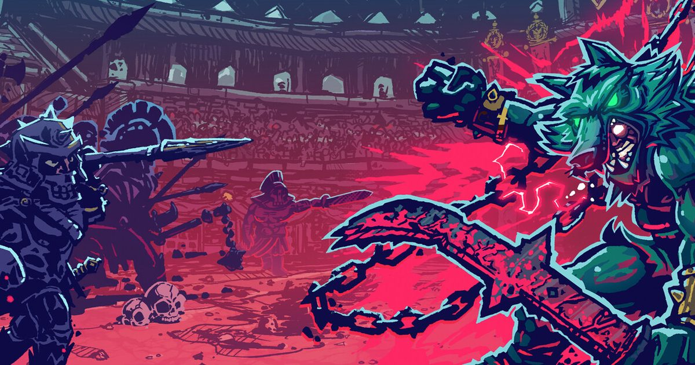

2026-10-21 · 独立游戏深读
澳大利亚独立团队 Featherweight Games 的《链兽角斗（Chained Beasts）》10 月 15 日悄悄登陆 Steam、PS5、Xbox Series X|S 与 Switch，首发进 Game Pass，支持跨平台联机与简体中文，首发 35% 折扣到 10 月 29 日；到 10 月 18 日，Steam 上 388 条评价里有 82% 是好评——「特别好评」。 在一堆「又一个肉鸽」里，它靠一条铁链把自己摘了出来：你和最多三个队友被物理地锁在一起，这条链子既是最麻烦的累赘，也是你最狠的武器。

先把机制摊开，再说判断。
今年我们连续看到几款合作游戏在做同一件事，只是层级不同。借此可以把「合作约束」分成三层：
这三层的区别在于「失败归咎于谁」。社交层失败了怪分工，沟通层失败了怪没说清楚，物理层失败了……怪那条链子。这是个非常关键的转移：当失败的原因被写进世界而不是写进队友，队友之间的矛盾就变成了笑料，而不是争吵。这也是为什么这类游戏在直播和群聊里传播得特别快——它自动生产名场面。
更聪明的是，锁链同时是武器。限制与攻击共用一件工具，这在合作游戏里是相当少见的做法。大部分游戏的合作机制是「加东西」——多一个人多一份输出；而这里是「同一件东西，用得好是战术，用不好是灾难」。一个机制同时承担正负两面，比堆十个机制都有效。
绝大多数肉鸽的成长曲线是加法：开局弱，一路捡增益，最后变成一台绞肉机。《链兽角斗》反过来——你的角色是在竞技场里一天天变得更糟的。伤腿、独眼、幻觉、恐慌时的僵直，70 多种负面状态会一路往上叠；想用药压下去，还得接受副作用；有的伤只能靠手术解决，而手术本身也是一次赌博。
这一步的意义在于它把「运营」从战斗里延伸到了战斗之外。你不再只是在问「这局的 build 强不强」，而是要在问「这具已经残了一半的身体，还能打什么样的仗」。断腿的人不适合拉扯战，独眼的人不适合远程投掷，幻觉状态下最好别拿队友当锚点。每一次受伤都在逼你重写战术，而不是逼你去刷一个更好的词条。
这也解释了为什么它需要肉鸽结构而不是线性关卡：只有永久死亡，衰败才有代价。如果受伤能在下一关自动痊愈，这套系统就只剩表演性。把「越来越糟」和「死了就得重来」绑在一起，才让每一次冒险的取舍成立。
角斗士题材的游戏不少，但大部分把观众当成背景音。《链兽角斗》把喝彩做成了一条资源线：你不仅要赢，还要赢得好看；把敌人甩进蛇坑、砸向观众席，换来的喝彩值直接变成金币、装备和解锁进度，进而决定你什么时候够格挑战章节 Boss。
这条设计同时解决了两个问题。其一是给物理互动一个正当理由——玩家会主动去尝试更花式的打法，而不是站桩输出；其二是给「再来一局」一个非惩罚性的钩子，即便这一局最终打输了，攒下的名望仍然在推进进度。对一个永久死亡的游戏来说，这条缓冲非常重要，它让失败不至于让人直接关掉游戏。
联合总监 Tim Kaldor 在发售公告里讲了这个项目的来历：十二年前 Featherweight 刚成立时，最想做的就是这款游戏，但当时的资源、团队和技术都撑不起来。它的雏形是一个 48 小时 game jam 上诞生的《Enterchained》，灵感来自电影《角斗士》里角色被锁链拴在一起的镜头。团队做了六个月，不得不把它放下，转去做更有把握完成的项目；十年后才意识到时机成熟，重新开始。
这个故事值得单独拿出来说，是因为它解释了一类创意的真实门槛：概念只需要 48 小时就能想清楚，但要让它「好玩」，需要物理模拟和网络同步都足够成熟。四个人的链条要同时模拟长度、缠绕、惯性与拉扯，还要在联机下保持一致——这在十二年前是小团队不可能稳定交付的东西。今天它成了，靠的不是创意变好，是引擎和工具变便宜了。
顺带一提它给自己贴的标签：「硬核派对游戏」。这个自我定位相当准确——它的门槛硬（永久死亡、创伤管理），但它的使用场景是派对（四人开黑、笑料密度极高）。这两件事本来是冲突的，锁链刚好把它们缝在了一起。
| 游戏 | 约束层 | 失败归咎于 | 单人可行性 |
|---|---|---|---|
| 胡闹厨房 | 社交层（分工） | 分工没说清 | 可行，但失去大半乐趣 |
| 我们曾到此：明日遗踪 | 沟通层（信息不对称） | 没讲明白自己看到了什么 | 不可行，官方不做单人 |
| PEAK | 社交层 + 熟人约束 | 队伍配置与体力管理 | 可行，是另一种游戏 |
| 链兽角斗 | 物理层（锁链长度与惯性） | 那条链子 | 最大风险点：链条失去对象后还剩什么，存疑 |
这张表指向一个很朴素的结论：约束层越往下沉，笑点越自动化，单人可行性越低。《链兽角斗》把约束沉到了最底层，所以它注定是一款「有人一起玩才成立」的游戏。
我们的评分：8.0 / 10（首发口碑与机制原创性评分）
给分在两处：锁链同时承担限制与攻击这一件事做得极干净，以及 70 多种创伤把肉鸽的成长方向整个掉了个头。扣分在单人体验的不确定性、以及三章结构下的内容厚度还需要时间验证（388 条评价是个还不错的样本，但样本量仍小）。
我们的观察
今年的合作游戏有一条清晰的主线：把「必须一起玩」从口号写进系统。《我们曾到此》把麦克风写进最低配置，《PEAK》坚持熟人组队，《链兽角斗》把铁链写进物理模拟。它们都不再指望玩家自觉配合，而是让世界本身强制配合。这比加更多关卡、更多角色有效得多，也是小团队能用低成本撬动大传播的唯一路径。
我们的观点
我认为《链兽角斗》最值得同行抄的不是锁链，而是「限制与攻击共用一件工具」这个思路。大部分设计者在做合作机制时，习惯性地去加能力、加技能、加配合招式；而真正让四个人笑成一团的东西，往往是一个会被误伤的共用物。它便宜、好懂、能自动生成故事，而且不需要任何数值支持。
我们的案例对比
同样是「让队友互相添乱」，行业里有两种做法：一种是惩罚式——比如部分派对游戏里的击飞与推挤，混乱只带来负面体验，玩家最后会开始互相指责；另一种是转化式——像本作这样，把添乱的同一件东西设计成可以反过来对付敌人的工具。区别只有一条：玩家有没有办法把混乱变成战术。有，混乱就是喜剧；没有，混乱就是吵架。
我们的实验
编辑部建议做一次「归因统计」：四人、两人、单人各打三场，每一场记录死亡与受伤的归因——死于敌人、死于链条缠绕、还是死于队友的恐慌拉扯。如果四局里链条相关占比超过一半，说明物理层约束真的在主导体验；如果单人局里这个比例掉到接近零，那么单人模式基本等于另一个游戏，购买前请务必按「必须有队友」来决策。再补一个小测试：整局不吃任何药剂，看能不能靠战术绕开副作用负担——这能直接告诉你创伤系统的压力到底是设计还是折磨。
《链兽角斗》是一款把一个想法做到底的游戏：十二年前那个 48 小时的 jam 原型想的就是「被锁在一起打架」，今天它成了一款特别好评的成品，中间没加任何别的东西。它的聪明在于把合作游戏的约束力从玩家的嘴巴下沉到了世界的物理规则，让失败变成笑料而不是争吵；它的野心在于敢把肉鸽的成长曲线反过来写，让玩家在一天比一天更糟的身体里找打法。如果你在找一个今晚就能和朋友吵起来又笑出来的游戏，它是这个秋天性价比最高的选择之一——只要你确实有朋友一起。